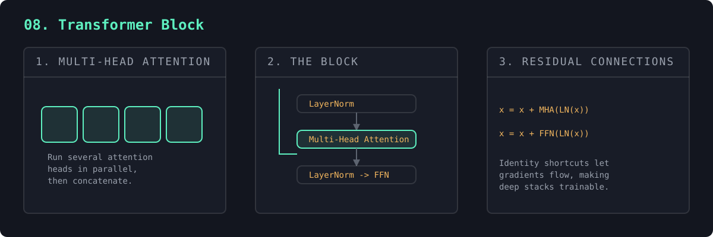

One head is the atom; the block is the molecule GPT stacks. Multi-head attention runs several heads in parallel, a feed-forward MLP lets each token think, and residual connections + layernorm make deep stacks trainable.
Shape in equals shape out — which is precisely why you can stack 4, 12, or 96 of them. GPT-3 is 96 of these in a row.
A transformer block combines four ideas. Multi-head attention runs several attention operations in parallel low-dimensional subspaces, letting different heads specialize (one tracks the previous letter, another the start of the word), then concatenates them. The position-wise feed-forward network (two linear layers around a nonlinearity, ~4× wider) gives each token nonlinear processing on its own.
The other two ideas make depth trainable. Residual connections (x = x + sublayer(x)) create identity shortcuts so gradients flow through dozens of layers without vanishing, and each block only has to learn a small correction. LayerNorm normalizes each token's vector to a stable scale; applying it before each sublayer (pre-norm) trains more stably than after. The slogan: attention mixes information across tokens, the FFN processes each token — gather, then think, repeated N times.

input shape: (2, 6, 32) output shape: (2, 6, 32) <- identical, so blocks stack 4 heads, each of size 8 | 12,608 parameters after stacking 3 blocks: (2, 6, 32)
"""
#8 in the "NN to tiny LLM" ladder.
One attention head (#7) is the atom. A TRANSFORMER BLOCK is the molecule that
GPT stacks N times. It adds four ideas that make deep networks actually train:
1. MULTI-HEAD ATTENTION — run several attention heads in parallel, each free
to focus on a different kind of relationship, then concatenate them. One
head might track "the previous letter", another "the start of the word".
2. FEED-FORWARD (MLP) — after tokens have GATHERED information via attention,
a per-token MLP THINKS about it. Attention mixes across tokens; the MLP
processes each token on its own. (This is your neural_network.py again.)
3. RESIDUAL CONNECTIONS — `x = x + sublayer(x)`. The block learns a small
adjustment to its input rather than a whole new value. This is THE trick
that lets us stack dozens of blocks without gradients vanishing.
4. LAYER NORM — normalize each token's vector before each sublayer to keep
activations at a stable scale, so training stays smooth.
The shape in equals the shape out (B, T, C), which is exactly why blocks stack.
Run with: python 08_transformer_block.py
"""
import torch
import torch.nn as nn
import torch.nn.functional as F
torch.manual_seed(0)
class Head(nn.Module):
"""One causal self-attention head (same as #7)."""
def __init__(self, n_embd, head_size):
super().__init__()
self.key = nn.Linear(n_embd, head_size, bias=False)
self.query = nn.Linear(n_embd, head_size, bias=False)
self.value = nn.Linear(n_embd, head_size, bias=False)
self.head_size = head_size
def forward(self, x):
B, T, C = x.shape
q, k, v = self.query(x), self.key(x), self.value(x)
scores = q @ k.transpose(-2, -1) / self.head_size ** 0.5
mask = torch.tril(torch.ones(T, T, device=x.device))
scores = scores.masked_fill(mask == 0, float("-inf"))
weights = F.softmax(scores, dim=-1)
return weights @ v
class MultiHeadAttention(nn.Module):
"""Several heads in parallel, concatenated and projected back to n_embd."""
def __init__(self, n_embd, n_heads):
super().__init__()
head_size = n_embd // n_heads
self.heads = nn.ModuleList(
[Head(n_embd, head_size) for _ in range(n_heads)]
)
self.proj = nn.Linear(n_embd, n_embd) # mix the heads' outputs
def forward(self, x):
out = torch.cat([h(x) for h in self.heads], dim=-1) # (B, T, n_embd)
return self.proj(out)
class FeedForward(nn.Module):
"""Per-token MLP. Expands to 4x then back — the standard transformer ratio."""
def __init__(self, n_embd):
super().__init__()
self.net = nn.Sequential(
nn.Linear(n_embd, 4 * n_embd),
nn.ReLU(),
nn.Linear(4 * n_embd, n_embd),
)
def forward(self, x):
return self.net(x)
class TransformerBlock(nn.Module):
"""Attention + feed-forward, each wrapped in (layernorm -> sublayer -> add).
Note the residual form `x = x + sublayer(ln(x))`: the network only has to
learn what to ADD to x, which is what makes very deep stacks trainable.
"""
def __init__(self, n_embd, n_heads):
super().__init__()
self.ln1 = nn.LayerNorm(n_embd)
self.attn = MultiHeadAttention(n_embd, n_heads)
self.ln2 = nn.LayerNorm(n_embd)
self.ffwd = FeedForward(n_embd)
def forward(self, x):
x = x + self.attn(self.ln1(x)) # tokens gather info from each other
x = x + self.ffwd(self.ln2(x)) # each token then thinks on its own
return x
if __name__ == "__main__":
B, T, C = 2, 6, 32 # batch, tokens, embedding dim
n_heads = 4
x = torch.randn(B, T, C)
block = TransformerBlock(n_embd=C, n_heads=n_heads)
out = block(x)
n_params = sum(p.numel() for p in block.parameters())
print(f"input shape: {tuple(x.shape)}")
print(f"output shape: {tuple(out.shape)} <- identical, so blocks stack")
print(f"{n_heads} heads, each of size {C // n_heads}")
print(f"block parameters: {n_params}\n")
# Demonstrate stacking: feed the output straight into more blocks.
blocks = nn.Sequential(*[TransformerBlock(C, n_heads) for _ in range(3)])
deep_out = blocks(x)
print(f"after stacking 3 blocks: {tuple(deep_out.shape)} (still B, T, C)")
print("\nStacking N of these — plus embeddings and a final classifier — IS")
print("a GPT. That's exactly what we assemble in #9.")